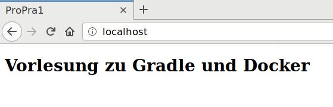

Christian Meter
Professionelle Softwareentwicklung SS 2018... für die vorlesungsfreie Zeit
August und September
Wurde großteils korrigiert
Schauen Sie täglich nach, ob Ihr Projekt korrigiert wurde und ob es nachgereicht werden muss!
Suchpfad, den Ihr Betriebssystem zum Nachschlagen verwendet (z.B. für Binaries)
λ echo $PATH
/usr/local/sbin:/usr/local/bin:/usr/sbin:/usr/bin:/sbin:/binSuchpfad, an denen der Java-Compiler u.A.
nach Class- / Jar-Dateien sucht
Standard: .
(das aktuelle Verzeichnis)
Das funktioniert auch erstmal ganz gut so...
λ javac HelloWorld.java
λ java HelloWorld
Hello, world!... aber hat man externe Bibliotheken (z.B. JUnit fürs Testing), dann muss ein anderer Classpath gesetzt werden
λ javac -cp .:junit-4.12.jar:hamcrest-core-1.3.jar MyLibTest.java
λ java -cp .:junit-4.12.jar:hamcrest-core-1.3.jar \
org.junit.runner.JUnitCore MyLibTestJUnit version 4.12
.
Time: 0,004
OK (1 test)Diese Befehle lassen sich mit Skripten festschreiben...
... oder man nimmt direkt ein Build-Tool
unterstützen beim Bauen von Projekten (wie der Name schon sagt) , Kompilieren, Abhängigkeiten downloaden + einbinden, Classpath setzen, ...
Kurz: Alles, worum wir uns eigentlich gar nicht kümmern wollen
Ant (2000)
erstes modernes Build-Tool für Java
Maven (2002)
Dependency-Management (MavenCentral)
Konvention-vor-Konfiguration
(2007)
Gradle Skripte sind direkt ausführbarer Code
wird in dieser Vorlesung verwendet
plugins {
id 'java'
id 'application'
}
mainClassName = 'App'
dependencies {
testCompile 'junit:junit:4.12'
}
repositories {
mavenCentral()
} ├── build.gradle
├── gradle
│ └── wrapper
│ ├── gradle-wrapper.jar
│ └── gradle-wrapper.properties
├── gradlew
├── gradlew.bat
├── settings.gradle
└── src
├── main
│ └── java
│ └── App.java
└── test
└── java
└── AppTest.javagradle <task>
init
erzeuge leeres Gradle Projekt
clean
entferne class-Dateien
test
teste Projekt
run
starte Mainfunktion
tasks
zeige Liste aller verfügbaren Tasks
distZip
erzeuge vollständig verpackte Anwendung als ZIP-File
Neues Projekt im Ordner "myproject" anlegen
λ gradle init --type=java-applicationbuild.gradle anpassen
λ nano build.gradlePlugin für gewünschte IDE hinzufügen
plugins {
id 'java'
id 'application'
id 'idea' // für IntelliJ
id 'eclipse' // oder für Eclipse
// ...
}Projektdateien für IDE anlegen (hier am Beispiel von IntelliJ)
λ gradle ideaProjekt in IDE öffnen und bearbeiten
λ intellij .Projekt ausführen
λ gradle runProjekt testen
λ gradle testExterne Abhängigkeit fürs Testing einfügen (werden mit "testCompile" markiert)
dependencies {
testCompile 'junit:junit:4.12' // nur in Tests eingebunden
}
Externe Abhängigkeit für Produktivcode einfügen (werden mit "compile" markiert)
dependencies {
testCompile 'junit:junit:4.12'
compile 'com.google.guava:guava:24.1-jre' // <--
}
Externe Bibliotheken können nun verwendet werden
import com.google.common.base.Strings;
public class App {
public static void main(String[] args) {
String nanas = Strings.repeat("na, ", 8);
System.out.println(nanas);
System.out.println("Batman!");
}
}λ gradle run
> Task :compileJava
> Task :processResources NO-SOURCE
> Task :classes
> Task :run
na, na, na, na, na, na, na, na, Batman!
BUILD SUCCESSFUL in 0sProjekt testen, bauen und in eine Zip verpacken
λ gradle distZipDas fertige Projekt kann nun verteilt werden
und befindet sich in:
build/distributions/myproject.zipDas Zip-File kann nun so ausgeführt werden:
λ cd build/distributions/
λ unzip myproject.zip
λ ./myproject/bin/myproject
Hello world.Kommen wir nun zu einem meiner Lieblingsthemen:
Szenario: Wir entwickeln einen Webservice
Dafür benötigen wir einen "klassischen" Webstack:
Wer muss diese Tutorials lesen?
Jeder Entwickler im Team
Jeder Admin, der diesen Stack deployen möchte
Welche Nachteile gibt es?
"Rezepte" für wiederkehrende Installationsschritte
Virtualisierung von Entwicklungsumgebungen
Erster Commit 2013: nach einem Monat 10.000 Tester
2014: 2,75 Millionen Downloads
2015: 100+ Millionen Downloads
Heute: fast überall Standard
Instanz eines Images.
ImageFertige Umgebung, in der Code ausgeführt werden kann. Besteht aus (mehreren) Layern.
LayerEine Instruktion zur Erstellung eines Images.
Leichtgewichtiger als Virtuelle Maschinen, da u.A. der Kernel des Hosts mit Docker geteilt wird
Nur die notwendigen Programme werden in einem Docker-Image mitgeliefert
Ein Docker-Container lässt sich innerhalb kürzester Zeit erstellen — und auch genauso schnell wieder wegwerfen
Vorteile
Gleiche Umgebung
für Development, Testing und Production
Nativer Support
macOSLinux-Kernel über VirtualBox bereitgestellt
WindowsWin 10 Pro, Enterprise und Education.
Linux-Kernel per VirtualBox oder nativ per Hyper-V.
---------------
< Time to code! >
---------------
\
\
\
## .
## ## ## ==
## ## ## ## ===
/""""""""""""""""___/ ===
~~~ {~~ ~~~~ ~~~ ~~~~ ~~ ~ / ===- ~~~
\______ o __/
\ \ __/
\____\______/
Erzeuge einen Debian Container
λ docker run -it debian:9 bash
root@ea82f1464306:/ exit # ea82..06 ist die Container ID
λ docker run -it debian:9 bash
root@ad2be33edb4b:/ # neuer Container, neue IDAndere Distributionen erhält man analog
λ docker run -it alpine sh
/ > uname -a
Linux c3dffad1d832 4.16.3-1-ARCH 1 SMP PREEMPT Thu Apr 19 09:17:56 UTC 2018 x86_64 Linux
Laufende Container anzeigen
λ docker psAlle Container anzeigen
λ docker ps -a
CONTAINER ID IMAGE COMMAND CREATED STATUS PORTS NAMES
ad2be33edb4b debian:9 "bash" 13 minutes ago Exited (0) 12 minutes ago awesome_visvesvaraya
ea82f1464306 debian:9 "bash" 13 minutes ago Exited (0) 13 minutes ago condescending_shannonImages anzeigen
λ docker images
REPOSITORY TAG IMAGE ID CREATED SIZE
debian 9 2b98c9851a37 6 weeks ago 100MB
alpine latest 3fd9065eaf02 3 months ago 4.14MBIn den Containern können Programme installiert werden
λ docker run -it alpine sh
/ > apk add --no-cache openjdk8
# ...
OK: 100 MiB in 51 packages
/ > java -version
openjdk version "1.8.0_151"
OpenJDK Runtime Environment (IcedTea 3.6.0) (Alpine 8.151.12-r0)
OpenJDK 64-Bit Server VM (build 25.151-b12, mixed mode)Dafür gibt es aber auch fertige Images auf DockerHub
λ docker run openjdk:8-alpine java --version
openjdk version "1.8.0_151"
OpenJDK Runtime Environment (IcedTea 3.6.0) (Alpine 8.151.12-r0)
OpenJDK 64-Bit Server VM (build 25.151-b12, mixed mode)λ gradle init --type=java-application
λ nano DockerfileFROM gradle:alpine
COPY . /home/gradle # kopiere alle Dateien des Hosts im
# aktuellen Verzeichnis in den Container
# nach /home/gradle
USER root
CMD ["gradle", "run"] # Startbefehlλ docker build -t myhelloworld .
λ docker run myhelloworld
> Task :run
Hello world.Möchten wir Daten speichern, bieten sich Datenbanken an. Hier ein Beispiel mit dem Key-Value-Store Redis (ähnlich einer HashMap).
λ docker run -p 6379:6379 redis:alpineUm sich mit der Datenbank zu verbinden,
verwenden wir hier
Jedis
compile "redis.clients:jedis:2.9.0"Zählt Programmstarts und speichert
den Wert in der Datenbank
import redis.clients.jedis.Jedis;
public class App {
private static void init(Jedis jedis) {
if (jedis.get("starts") == null) jedis.set("starts", "1");
}
public static void main(String[] args) {
Jedis jedis = new Jedis("localhost");
init(jedis);
System.out.println("Program starts: " + jedis.get("starts"));
jedis.incr("starts");
}
}Möchte ich den Code in einem Container während der Laufzeit ändern, muss ich ein Volume Binding anwenden
Dafür erstellen wir eine minimale Webseite
<!-- Datei: index.html -->
<html>
<head><title>ProPra1</title></head>
<body>
<h1>Vorlesung zu Gradle und Docker</h1>
</body>
</html>Dann starten wir einen nginx-Webserver und laden die Datei index.html dort hinein
λ docker run -p 80:80 -v `pwd`:/usr/share/nginx/html nginx:alpineDer Parameter `-v` sorgt dafür, dass alle angegebenen Dateien bidirektional gelesen und geschrieben werden
Im Browser können wir nun http://localhost aufrufen
Wenn wir nun index.html verändern, ändert sich auch der Inhalt des Containers und damit auch die Webseite
Teile des Codes aus der Demo-Session sind hier erreichbar: